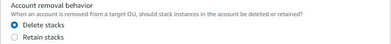

Criar um conjunto de pilhas
Você pode criar um conjunto de pilhas usando o AWS Management Console ou usando comandos do AWS CloudFormation na AWS CLI. Você pode criar um conjunto de pilhas com as permissões service-managed ou self-managed.
Com permissões self-managed, você pode implantar instâncias de pilha em Contas da AWS específicas de regiões específicas. Para fazer isso, você deve primeiro criar as funções do IAM necessárias para estabelecer uma relação de confiança entre a conta na qual você está administrando o conjunto de pilhas e a conta na qual você está implantando as instâncias de pilha.
Com as permissões service-managed, você pode implantar instâncias de pilhas em contas gerenciadas pelo AWS Organizations em regiões específicas. Com esse modelo, você não precisa criar os perfis do IAM necessários. O StackSets cria esses perfis do IAM em seu nome. Você também pode habilitar implantações automáticas em contas adicionadas a uma organização de destino ou unidade organizacional (OU) no futuro. Com implantações automáticas habilitadas, o StackSets excluirá automaticamente instâncias de pilha de uma conta se ela for removida de uma organização de destino ou OU.
Tópicos
Criar um conjunto de pilhas com permissões autogerenciadas
Tópicos
Criar um conjunto de pilhas com permissões autogerenciadas usando a AWS Management Console
Abra o console do AWS CloudFormation em https://console.aws.amazon.com/cloudformation
. -
No painel de navegação, escolha StackSets.
-
No topo da página StackSets, escolha Create StackSet (Criar StackSet).
-
Em Prerequisite - Prepare template (Pré-requisito - preparar modelo), escolha Use a sample template (Usar um modelo de exemplo).
-
Em Selecionar um exemplo de modelo, no menu suspenso, escolha o modelo Habilitar configuração da AWS. Selecione Próximo.

-
Na página Specify StackSet details (Especificar detalhes do StackSet), forneça as seguintes informações.
-
Forneça um nome para o conjunto de pilhas. Os nomes dos conjuntos de pilhas precisam começar com um caractere alfabético e conter apenas letras, números e hifens. Neste passo a passo, usamos o nome
my-awsconfig-stackset. -
Você precisará especificar os valores para os parâmetros usados pelo AWS Config. Para obter mais informações sobre esses parâmetros, consulte Configurar o AWS Config com o console no Guia do desenvolvedor do AWS Config. Neste passo-a-passo, manteremos as configurações padrão para todos parâmetros do AWS Config.
-
Você pode configurar atualizações do Amazon Simple Notification Service (SNS) por e-mail, com base no conteúdo do log, usando os parâmetros TopicARN e NotificationEmail. Para a finalidade deste passo-a-passo, não configuraremos as atualizações do Amazon SNS.
-
É possível configurar o canal de entrega para atualizações e notificações usando os parâmetros DeliveryChannelName e Frequency. Para obter mais informações sobre o canal de entrega no AWS Config, consulte Gerenciar o canal de entrega no Guia de desenvolvedor do AWS Config. Para a finalidade deste passo-a-passo, manteremos as configurações padrão nesta área.
-
-
Depois de especificar os parâmetros para o AWS Config, escolha Next (Próximo).
-
Na página Configure StackSet options (Configurar opções de StackSet), adicione uma tag ao especificar um par de chave e valor. Neste passo-a-passo, criaremos uma tag chamada Fase com um valor Teste. As tags que você aplica aos conjuntos de pilhas são aplicadas a todos os recursos criados pelas suas pilhas. Para obter mais informações sobre como as tags são usadas na AWS, consulte Usar tags de alocação de custos, no Guia do usuário do AWS Billing and Cost Management.
Deixe Permissions (Permissões) não especificado.
-
Para Execution configuration (Configuração de execução), escolha Active (Ativo) para que o StackSets execute operações não conflitantes simultaneamente e enfileire operações conflitantes. Depois do término das operações conflitantes, o StackSets inicia as operações em fila na ordem de solicitação.
nota
Se já houver operações em execução ou em fila, o StackSets enfileirará todas as operações de entrada, mesmo que não sejam conflitantes.
Não será possível modificar a configuração de execução do conjunto de pilhas enquanto houver operações em execução ou em fila para esse conjunto de pilhas.
-
Escolha Next (Próximo).
-
Na página Set deployment options (Definir opções de implantação), informe em quais contas e regiões você deseja que as pilhas do seu conjunto de pilhas sejam implantadas.
O AWS CloudFormation implementará pilhas nas contas especificadas na primeira região, depois passará para a próxima e assim por diante, desde que as falhas de implantação de uma região não excedam uma tolerância a falhas especificada.
-
Em Accounts (Contas), escolha Deploy stacks in accounts (Implantar pilhas em contas). Cole os números da sua conta de destino na caixa de texto, separando-os com vírgulas.
-
Em Specify regions (Especificar regiões), escolha Leste dos EUA (Norte da Virgínia) Região. Repita para a Região Oeste dos EUA (Oregon). Clique na seta para cima ao lado de Região Oeste dos EUA (Oregon) a fim de movê-la para ser a primeira entrada na lista. A ordem das regiões em Specify regions (Especificar regiões) determina a ordem de implantação.
-
Em Deployment options (Opções de implantação):
-
Em Maximum concurrent accounts (Máximo de contas concorrentes), mantenha os valores padrão de Number (Número) e 1.
Isso significa que o AWS CloudFormation implantará sua pilha em apenas uma conta de cada vez.
-
Em Failure tolerance (Tolerância a falhas), mantenha os padrões de Number (Número) e 0.
Isso significa que, no máximo, uma implantação de pilha poderá falhar em uma das suas regiões especificadas para que o AWS CloudFormation interrompa a implantação na região atual e cancele a implantação nas regiões restantes.
-
-
Em Region concurrency (Simultaneidade de região):
-
Selecione Sequential (Sequencial) ou Parallel (Paralelo) para determinar a ordem de implantação do StackSets para regiões especificadas. Por padrão, a opção Sequential (Sequencial) é selecionada.
Selecione Próximo.
-

-
-
Na página Revisão, revise suas escolhas e as propriedades do seu conjunto de pilhas. Para fazer as alterações, escolha Editar na área em que você deseja alterar as propriedades. Antes de criar o conjunto de pilhas, é necessário preencher a caixa de seleção na área Capabilities (Recursos) para confirmar que alguns dos recursos que você está criando com o conjunto de pilhas podem exigir novos recursos e permissões do IAM. Para obter mais informações sobre as permissões que poderão ser necessárias, consulte Reconhecer recursos do IAM em modelos do AWS CloudFormation, neste guia. Quando estiver pronto para criar seu conjunto de pilhas, escolha Submit (Enviar).

-
O AWS CloudFormation começa a criar seu conjunto de pilhas. Visualize o progresso e o status da criação das pilhas em seu conjunto de pilhas na página de detalhes do conjunto de pilhas que é aberta ao escolher Submit (Enviar).

Criar um conjunto de pilhas com permissões autogerenciadas usando a AWS CLI
Ao criar conjuntos de pilhas usando os comandos da AWS CLI, você executa dois comandos separados: create-stack-set para carregar seu modelo e criar o contêiner do conjunto de pilhas e create-stack-instances para criar as pilhas dentro do seu conjunto de pilhas. Comece executando um comando da AWS CLI, create-stack-set, para carregar o modelo de amostra do AWS CloudFormation que habilita o AWS Config e, em seguida, inicie a criação do conjunto de pilhas.
-
Abra a AWS CLI.
-
Execute o comando a seguir.
Para o parâmetro
--template-url, forneça o URL do bucket do Amazon S3 no qual você está armazenando seu modelo. Neste passo-a-passo, usaremosmy-awsconfig-stacksetcomo o valor do parâmetro--stack-set-name. Também ativamos--managed-executionpara que o StackSets execute operações não conflitantes simultaneamente e enfileire operações conflitantes. Depois do término das operações conflitantes, o StackSets inicia as operações em fila na ordem de solicitação.nota
Se já houver operações em execução ou em fila, o StackSets enfileirará todas as operações de entrada, mesmo que não sejam conflitantes.
Não será possível modificar a configuração de execução do conjunto de pilhas enquanto houver operações em execução ou em fila para esse conjunto de pilhas.
aws cloudformation create-stack-set \ --stack-set-name my-awsconfig-stackset \ --template-url https://s3.amazonaws.com/cloudformation-stackset-sample-templates-us-east-1/EnableAWSConfig.yml -
Quando o comando
create-stack-setestiver concluído, execute o comandolist-stack-setspara ver qual conjunto de pilhas foi criado. Sua nova pilha configurada deve ser visualizada nos resultados.aws cloudformation list-stack-sets -
Execute o comando
create-stack-instancesda AWS CLI para adicionar instâncias de pilha ao seu conjunto de pilhas. Neste passo-a-passo, usaremosus-west-2eus-east-1como os valores do parâmetro--regions.Configure a tolerância a falhas e o máximo de contas concorrentes definindo
FailureToleranceCountcomo0eMaxConcurrentCountcomo1no parâmetro--operation-preferences, como mostrado no exemplo a seguir. Para aplicar porcentagens, useFailureTolerancePercentageouMaxConcurrentPercentage. Para a finalidade deste passo-a-passo, usaremos conta, e não porcentagem.nota
O valor de
MaxConcurrentCountdepende do valor deFailureToleranceCount.MaxConcurrentCounté, no máximo, um a mais do queMaxConcurrentCount.aws cloudformation create-stack-instances \ --stack-set-name my-awsconfig-stackset \ --accounts '["account_ID_1","account_ID_2"]' \ --regions '["region_1","region_2"]' \ --operation-preferences FailureToleranceCount=0,MaxConcurrentCount=1nota
A simultaneidade das implantações de instâncias do StackSet na operação depende do valor de
FailureToleranceCount-MaxConcurrentCounte é, no máximo, um a mais do que oFailureToleranceCount.Importante
Aguarde até que uma operação seja concluída antes de iniciar outra. Você só pode executar uma operação por vez.
-
Verifique se as instâncias da pilha foram criadas com sucesso. Execute
DescribeStackSetOperationcomoperation-id, que é retornado como parte da saída da etapa 4.aws cloudformation describe-stack-set-operation \ --stack-set-name my-awsconfig-stackset \ --operation-idoperation_ID
Criar um conjunto de pilhas com permissões gerenciadas pelo serviço
Tópicos
Considerações ao criar um conjunto de pilhas com permissões gerenciadas pelo serviço
Antes de criar um conjunto de pilha com permissões gerenciadas por serviço, considere o seguinte:
-
Os conjuntos de pilha com permissões gerenciadas por serviço são criados na conta de gerenciamento, incluindo conjuntos de pilha criados por administradores delegados.
-
O conjunto de pilhas pode ter como destino toda a sua organização ou unidades organizacionais (OUs) especificadas. Se o conjunto de pilhas tiver como destino a sua organização, ele também terá como destino todas as contas em todas as OUs da organização. Se o conjunto de pilhas tiver como destino OUs especificadas, ela também terá todas as contas nessas OUs como destino.
-
Se o conjunto de pilhas tiver uma OU pai como destino, o conjunto de pilhas também terá qualquer OU filha como destino.
-
Vários conjuntos de pilhas podem ter como destino a mesma organização ou OU.
-
O conjunto de pilhas não pode ter contas fora da organização como destino.
-
Seu conjunto de pilhas não pode implantar pilhas aninhadas.
-
O StackSets não implanta instâncias de pilha na conta de gerenciamento da organização, mesmo que a conta de gerenciamento esteja em sua organização ou em uma OU na sua organização.
-
A implantação automática é definida no nível do conjunto de pilhas. Não é possível ajustar implantações automáticas seletivamente para OUs, contas ou regiões.
-
As permissões da entidade principal do IAM (usuário, função ou grupo) que você usa para fazer login na conta de gerenciamento determinam se você está autorizado a implantar com o StackSets. Para obter um exemplo de política do IAM que concede permissões para implantar em uma organização, consulte Exemplo de política que concede permissões de conjunto de pilhas gerenciadas pelo serviço.
-
Os administradores delegados têm permissões completas para implantar em contas em sua organização. A conta de gerenciamento não pode limitar as permissões de administrador delegado para implantar em OUs específicas ou para executar operações específicas de conjunto de pilhas.
Criar um conjunto de pilhas com permissões gerenciadas pelo serviço usando o console do AWS CloudFormation
-
Abra o console do AWS CloudFormation em https://console.aws.amazon.com/cloudformation
. -
No painel de navegação, escolha StackSets.
-
No topo da página StackSets, escolha Create StackSet (Criar StackSet).
-
Em Prepare template (Preparar modelo), escolha Template is ready (O modelo está pronto).
-
Em Specify template (Especificar modelo), escolha especificar o URL para o bucket do S3 que contém o modelo de pilha ou fazer upload de um arquivo de modelo de pilha. Escolha Next (Próximo).
-
Na página Specify StackSet details (Especificar detalhes do StackSet) forneça um nome para o conjunto de pilhas, especifique quaisquer parâmetros e escolha Next (Próximo).
-
Na página Configure StackSet options (Configurar opções do StackSet) em Tags, especifique todas as tags a serem aplicadas aos recursos em sua pilha.
-
Em Permissions (Permissões), escolha Service-managed permissions (Permissões gerenciadas pelo serviço).
Se o acesso confiável com o AWS Organizations estiver desabilitado, será exibido um banner. É necessário o acesso confiável para criar ou atualizar um conjunto de pilhas com permissões gerenciadas pelo serviço. Somente o administrador na conta de gerenciamento da organização tem permissões para Ativar o acesso confiável com AWS Organizations.

-
Para Execution configuration (Configuração de execução), escolha Active (Ativo) para que o StackSets execute operações não conflitantes simultaneamente e enfileire operações conflitantes. Depois do término das operações conflitantes, o StackSets inicia as operações em fila na ordem de solicitação.
nota
Se já houver operações em execução ou em fila, o StackSets enfileirará todas as operações de entrada, mesmo que não sejam conflitantes.
Não será possível modificar a configuração de execução do conjunto de pilhas enquanto houver operações em execução ou em fila para esse conjunto de pilhas.
-
Escolha Próximo para continuar e habilitar o acesso confiável caso ainda não esteja habilitado.
-
Na página Set deployment options (Definir opções de implantação) em Deployment targets (Destinos da implantação), escolha as contas em sua organização nas quais implantar.
-
Escolha Deploy to organization (Implantar na organização) para implantar em todas as contas em sua organização.

-
Escolha Deploy to organizational units (OUs) (Implantar em unidades organizacionais (OUs)) para implantar em todas as contas em OUs específicas. Escolha Add an OU (Adicionar uma OU) e cole o ID de destino na caixa de texto. Repita para cada nova OU de destino.

-
-
Em Automatic deployment (Implantação automática), escolha se os StackSets serão implantados automaticamente em contas que serão adicionadas à organização de destino ou OUs no futuro.

-
Se você habilitou a implantação automática, em Account removal behavior (Comportamento de remoção de conta), escolha se os recursos de pilha serão retidos ou excluídos quando uma conta for removida de uma organização ou OU de destino.
nota
Com a opção Retain stacks (Reter pilhas) selecionada, as instâncias de pilha são removidas do conjunto de pilhas, mas as pilhas e os recursos associados são retidos. Os recursos permanecem em seu estado atual, mas não farão mais parte do conjunto de pilhas.
-
Em Deployment regions (Regiões de implantação), escolha as regiões nas quais você deseja implantar instâncias de pilha. Escolha Next (Próximo).
-
Na página Review (Revisar), verifique se o StackSets será implantado nas contas corretas nas regiões corretas e escolha Create StackSet (Criar StackSet).
A página StackSet details (Detalhes do StackSet) é aberta. Você pode visualizar o andamento e o status da criação das pilhas em seu conjunto de pilhas.
Criar um conjunto de pilhas com permissões gerenciadas pelo serviço usando a AWS CLI
Quando cria conjuntos de pilhas usando a AWS CLI, você executa dois comandos separados. Durante o create-stack-set, você carrega seu modelo, cria o contêiner do conjunto de pilhas e gerencia implantações automáticas. Durante create-stack-instances, você cria instâncias de pilha em contas de destino específicas.
Ao atuar como administrador delegado, você deve definir o parâmetro --call-as como DELEGATED_ADMIN todas as vezes que executar um comando StackSets.
--call-asDELEGATED_ADMIN
Os conjuntos de pilha criados por um administrador delegado são criados na conta de gerenciamento da organização.
-
Abra a AWS CLI.
-
Execute o comando
create-stack-set.No exemplo a seguir, habilitamos implantações automáticas para permitir que o StackSets implante automaticamente em contas adicionadas à organização de destino ou em OUs no futuro. Retemos recursos de pilha quando uma conta é removida de uma organização ou OU de destino. Também ativamos
--managed-executionpara que o StackSets execute operações não conflitantes simultaneamente e enfileire operações conflitantes. Depois do término das operações conflitantes, o StackSets inicia as operações em fila na ordem de solicitação.nota
Se já houver operações em execução ou em fila, o StackSets enfileirará todas as operações de entrada, mesmo que não sejam conflitantes.
Não será possível modificar a configuração de execução do conjunto de pilhas enquanto houver operações em execução ou em fila para esse conjunto de pilhas.
aws cloudformation create-stack-set \ --stack-set-nameStackSet_myApp\ --template-urlhttps://s3.us-west-2.amazonaws.com/cloudformation-templates-us-west-2/MyApp.template\ --permission-modelSERVICE_MANAGED\ --auto-deployment Enabled=true,RetainStacksOnAccountRemoval=true -
Quando o comando
create-stack-setfor concluído, execute o comandolist-stack-setspara ver qual conjunto de pilhas foi criado. O novo conjunto de pilhas é listado nos resultados.aws cloudformation list-stack-sets-
Se você definir o parâmetro
--call-ascomoDELEGATED_ADMINenquanto estiver conectado à sua conta de membro,list-stack-setsretornará todos os conjuntos de pilha com permissões gerenciadas por serviço na conta de gerenciamento da organização. -
Se você definir o parâmetro
--call-asSELFenquanto estiver conectado à sua conta da AWS,list-stack-setsretornará todos os conjuntos de pilhas autogerenciados em sua conta da AWS. -
Se você definir o parâmetro
--call-ascomoSELFenquanto estiver conectado à conta de gerenciamento da organização,list-stack-setsretornará todos os conjuntos de pilha na organização conta de gerenciamento.
-
-
Execute o comando
create-stack-instancespara adicionar instâncias de pilha ao conjunto de pilhas. Para o parâmetro--deployment-targets, especifique o ID raiz da organização a ser implantado em todas as contas da organização ou especifique IDs de OUs para implantar em todas as contas nessas OUs. Neste exemplo, especificamos OUs com os IDsou-rcuk-slr5lh0aeou-rcuk-1x5j1lwo.aws cloudformation create-stack-instances --stack-set-nameStackSet_myApp--deployment-targets OrganizationalUnitIds='["ou-rcuk-1x5j1lwo", "ou-rcuk-slr5lh0a"]' --regions '["eu-west-1"]'Importante
Aguarde até que uma operação seja concluída antes de iniciar outra. Você só pode executar uma operação por vez.
-
Usando o
operation-idque foi retornado como parte da saídacreate-stack-instancesna etapa 4, executedescribe-stack-set-operationpara verificar se suas instâncias de pilha foram criadas com êxito.